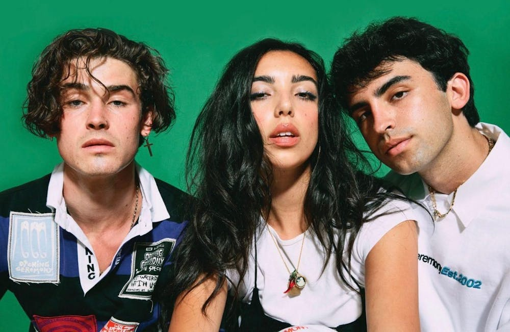

American alternative pop and indie
I really love their synth-infused, atmospheric sound that blends elements of '90s R&B, ambient synth-pop, and electronic music. A lot of their song lyrics often explore the themes of youth culture, relationships, and self-discovery in the internet age
 link to their band